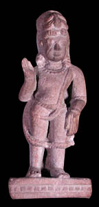

ParashuramaThe sixth incarnation of Vishnu is a human being named Parashurama. Parashurama was the son of a hermit who held an axe given to him by the god Shiva. 
Vishnu was sent to earth as Parashurama to restore order after one caste tried to control all other castes. Parashurama was born as the son of a Brahmin hermit. Because of an act of obedience, Parashurama was granted several wishes by his father. One wish was that he would be invincible in battle. Eventually, a king who was part of the controlling caste stole a magical cow from Parashurama's father. Parashurama tracked him down, killed him and brought the cow back to his father. When the sons of the king came after Parashurama they did not find him, so they killed his father instead. Parashurama took revenge upon the entire caste by fighting in many battles against them and ultimately killing them all. |